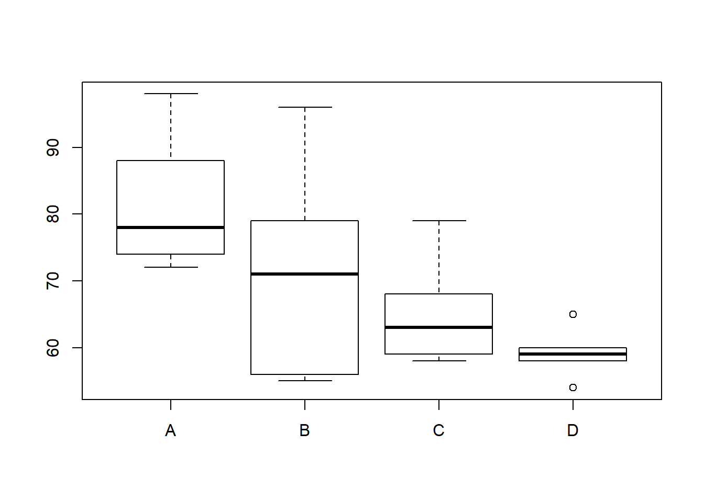
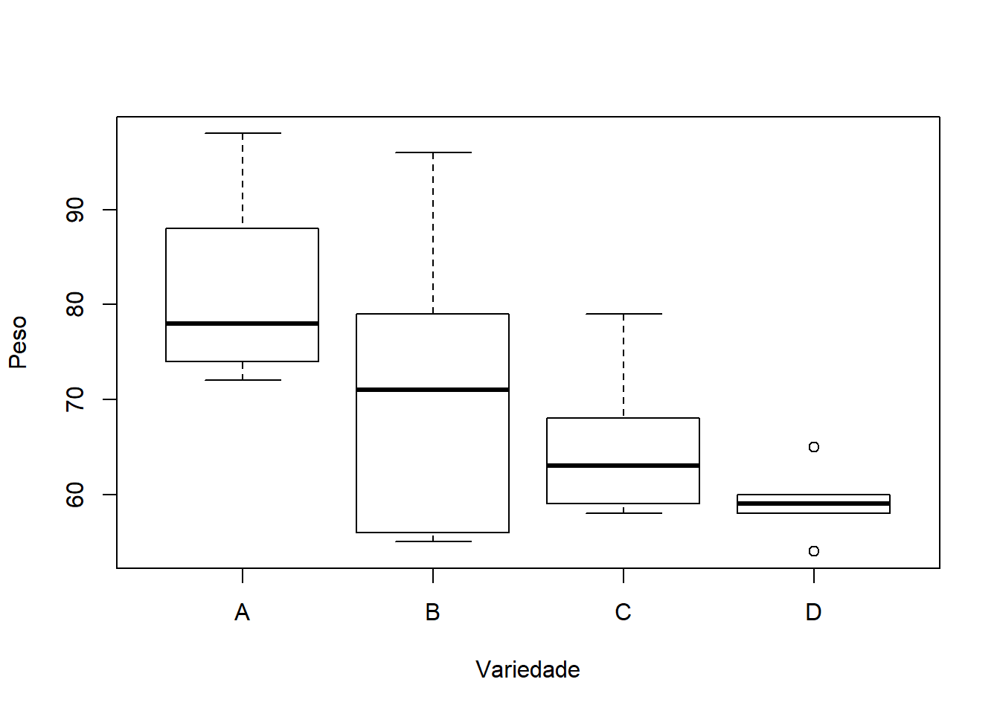
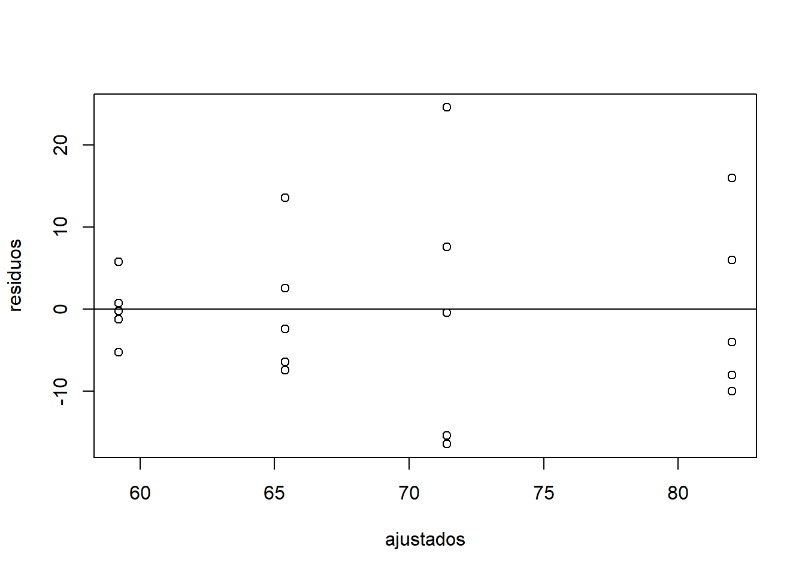
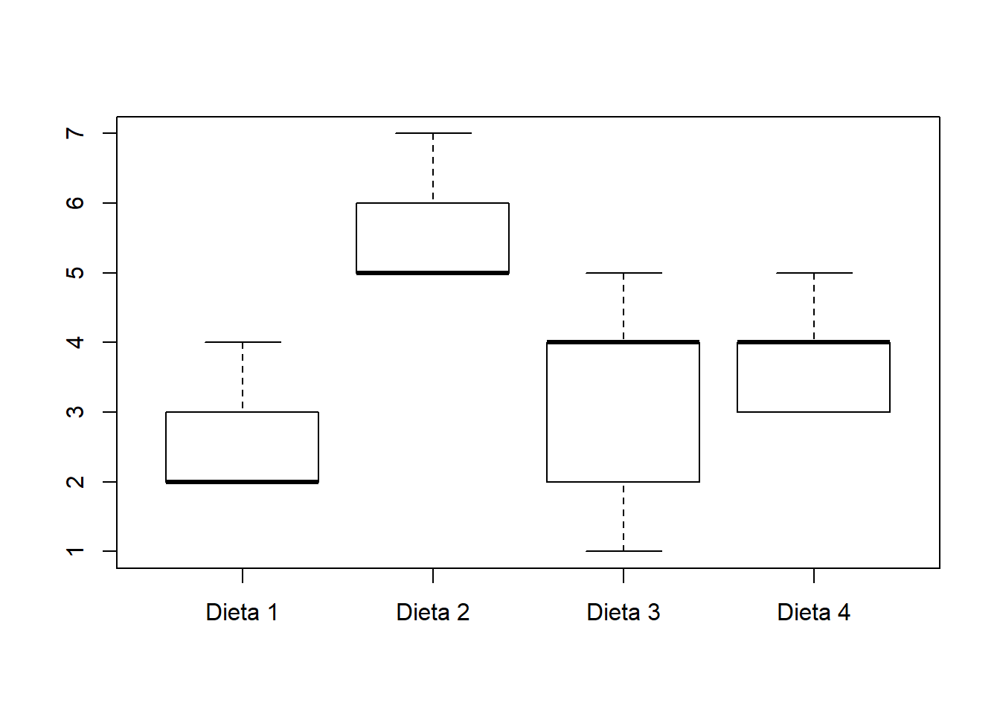
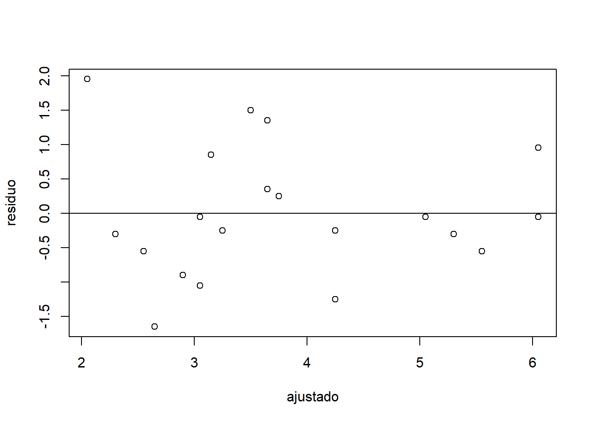

Capítulo 1 Delineamentos Experimentais
A experimentação é uma parte da estatística probabilística que estuda o planejamento, execução, coleta de dados, análise de dados e interpretação dos resultados provenientes de um experimento.
Um experimento é um procedimento planejado com base em uma hipótese, que tem por objetivo provocar fenômenos (tratamentos) de forma controlada, analisando e interpretando os resultados obtidos.
O tratamento é o método, elemento ou material cujo efeito desejamos avaliar em um experimento. Por exemplo: formas de preparo de solo, diferentes cultivares, doses de adubação, controle de insetos e outras pragas, controle de uma doença. Num experimento, somente o tratamento variade uma unidade experimental para outra, as demais condições são mantidas constantes, salvo erros não controláveis.
E alguns experimentos, utiliza-se a testemunha (nas ciências agrárias e ambientais) ou placebo (na saúde), que são as unidades experimentais que não recebem tratamento.
A unidade experimental é a unidade que recebe o tratamento uma vez e, normalmente são chamadas de parcelas. A escolha da unidade experimental depende dos tipos de tratamentos que serão avaliados. Podem ser: uma área de campo, um vaso com solo, um animal, uma placa de Petri, uma planta. Em áreas de campo, normalmente utiliza-se a bordadura. Num experimento, recomenda-se, no mínimo, a utilização de 20 UEs.
Em um experimento, a variável a ser avaliada chamamos de variável resposta. Por exemplo, núumero de grãos por planta, número de folhas por planta, altura das plantas.
1.1 Princípios básicos da Experimentação
1.1.1 Repetição
A repetição consiste na aplicação do mesmo tratamento sobre duas ou mais unidades experimentais. Permite estimar o erro experimental e avaliar de forma mais precisa o efeito de cada tratamento.
O erro experimental é caracterizado pela variância entre as unidades experimentais que receberam o mesmo tratamento.
1.1.2 Casualização
A casualização consiste na aplicação dos tratamentos aleatoriamente (sorteio) sobre as unidades experimentais. A casualização é usada para obter a independência dos erros, ou seja, evitar que determinados tratamentos sejam favorecidos.
1.1.3 Controle local
Quando tiver heterogeneidade no material experimental: plantas de diferentes alturas, animais de diferentes idades, solo com declividade, deve-se separar o material em grupos homogêneos e aplicar o tratamento uma vez dentro de cada grupo (blocos). A homogeneidade ou não do material dá origem aos tipos de delineamentos:
Delineamento Inteiramente Casualizado (DIC): material experimental homogêneo;
Delineamento Blocos Casualizados (DBC): material experimental com uma fonte de heterogeneidade;
Delineamento Quadrado Latino (DQL): material experimental com duas fontes de heterogeneidade.
1.2 Análise de Variância
Para saber se existe diferença significativa entre as médias resultados dos efeitos de tratamentos, realiza-se a Análise de Variância (ANOVA).
| Fonte de Variação | Graus de Liberdade (GL) | Soma de Quadrados (SQ) | Quadrado Médio (QM) | Falc | P |
|---|---|---|---|---|---|
| Tratamento | I-1 | SQtrat | QMat | QMatr/QMerro | P |
| Erro | GLerro | SQerro | QMerro | ||
| Total | IJ-1 | SQtotal |
1.3 Hipóteses estatísticas
H0: Não existe diferença entre as médias dos tratamentos
H1: Existe, pelo menos, uma diferença entre as médias dos tratamentos
1.4 Delineamento Inteiramente Causalizado (DIC)
É utilizado quando as unidades experimentais são homogêneas. É o mais simples dos delineamentos e os tratamentos são designados às unidades experimentais de forma casualizada, por meio de um único sorteio. Usado principalmente em pequenos animais, casas de vegetação e em laboratórios.
Exemplo: Um produtor deseja avaliar 4 variedades de pera (A, B, C e D). Para tanto, instalou um experimento no delineamento inteiramente casualizado, utilizando 5 repetições por variedade. Os resultados, peso médio do fruto, estão apresentados a seguir:
Variedades de pera separadas por grupos em faixas de peso e repetição
Existe diferença significativa entre as variedades de pera, considerando o peso médio dos frutos de cada variedade?
Para responder esta pergunta, utilizamos a Análise de Variância (ANOVA).
No software RStudio:
Criar o arquivo acima em planilha eletrônica. Nomear como DIC e salvar em formato .xls.
Importar no RStudio:
require(readxl)
url <- "https://github.com/Smolski/softwarelivrer/raw/master/avancado/dic.xls"
destfile <- "dic.xls"
curl::curl_download(url, destfile)
DIC <- read_excel(destfile)
attach(DIC)O comando que gera a análise de variância é o aov() e o comando que exibe o quadro da ANOVA é o anova. Então, podemos gerar o quadro da análise de uma são vez associando os dois comandos.
## Df Sum Sq Mean Sq F value Pr(>F)
## Variedade 3 1414 471.3 3.775 0.0319 *
## Residuals 16 1997 124.8
## ---
## Signif. codes: 0 '***' 0.001 '**' 0.01 '*' 0.05 '.' 0.1 ' ' 1Hipóteses estatísticas:
- H0: ti \(=\) 0 (as médias dos tratamentos nãao diferem entre si)
- H1: ti \(\neq\) 0 (existe, no mínimo, uma diferença entre as médias dos tratamentos)
Como p = 0,0319 (0,01 \(\leq\) p “menor ou igual a” 0,05), rejeita-se H0 com nível de significância de 5% e conclui-se que existe diferença significativa entre as médias dos tratamentos.
Para saber quais as médias que diferem, utilizamos o teste de Tukey.
## The following objects are masked from DIC (pos = 3):
##
## Peso, Repeticao, Variedade## Tukey multiple comparisons of means
## 95% family-wise confidence level
## factor levels have been ordered
##
## Fit: aov(formula = Peso ~ Variedade)
##
## $Variedade
## diff lwr upr p adj
## C-D 6.2 -14.016299 26.4163 0.8163995
## B-D 12.2 -8.016299 32.4163 0.3429223
## A-D 22.8 2.583701 43.0163 0.0244592
## B-C 6.0 -14.216299 26.2163 0.8303280
## A-C 16.6 -3.616299 36.8163 0.1281553
## A-B 10.6 -9.616299 30.8163 0.4602137Para que o RStudio apresente uma tabela com as médias e letras indicando quais as médias que diferiram, devemos instalar o pacote agricolae.
##
## Study: anova ~ as.factor("Variedade")
##
## HSD Test for Peso
##
## Mean Square Error: 124.825
##
## Variedade, means
##
## Peso std r Min Max
## A 82.0 10.862780 5 72 98
## B 71.4 17.096783 5 55 96
## C 65.4 8.561542 5 58 79
## D 59.2 3.962323 5 54 65
##
## Alpha: 0.05 ; DF Error: 16
## Critical Value of Studentized Range: 4.046093
##
## Minimun Significant Difference: 20.2163
##
## Treatments with the same letter are not significantly different.
##
## Peso groups
## A 82.0 a
## B 71.4 ab
## C 65.4 ab
## D 59.2 b*Médias dos tratamentos não seguidas por mesma letra diferem pelo teste de Tukey, ao nível de 5% de significância.
Conclusão: A variedade de pera A apresentou o maior peso médio dos frutos, que não diferiu significativamente do peso médio das variedades B e C. A variedade de pera D apresentou o menor peso médio dos frutos, que não diferiu significativamente do peso médio das variedades B e C. As variedades B e C apresentaram peso médio dos frutos intermediário.
## The following objects are masked from DIC (pos = 4):
##
## Peso, Repeticao, Variedade## The following objects are masked from DIC (pos = 5):
##
## Peso, Repeticao, Variedade

## A B C D
## 82.0 71.4 65.4 59.2## A B C D
## 10.862780 17.096783 8.561542 3.962323
1.5 Delineamento Blocos Casualizados (DBC)
É utilizado quando as unidades experimentais são heterogêneas. Os tratamentos são designados às unidades experimentais de forma casualizada, por meio de sorteio por blocos. Na área agrícola, é usado principalmente em áreas de campo e grandes animais.
Exemplo: Uma Nutricionista elaborou 4 dietas e quer aplicá-las em 20 pessoas a fim detestar suas eficiências quanto à perda de peso. Porém ela notou que entre essas 20 pessoas existem 5 grupos de faixas iniciais de peso. Então, para aumentar a eficácia do teste ela separou os 20 indivíduos em 5 grupos de faixas de peso.
Indivíduos separados por grupos em faixas de peso
Criar o arquivo acima em planilha eletrônica. Nomear como DBC e salvar em formato .xls.
Importar no RStudio:
require(readxl)
url <- "https://github.com/Smolski/softwarelivrer/raw/master/avancado/dbc.xls"
destfile <- "dbc.xls"
curl::curl_download(url, destfile)
DBC <- read_excel(destfile)
attach(DBC)
anova=aov(Perda~Tratamentos+Blocos)
summary(anova)## Df Sum Sq Mean Sq F value Pr(>F)
## Tratamentos 3 25.2 8.4 6.000 0.00973 **
## Blocos 4 3.2 0.8 0.571 0.68854
## Residuals 12 16.8 1.4
## ---
## Signif. codes: 0 '***' 0.001 '**' 0.01 '*' 0.05 '.' 0.1 ' ' 1Hipóteses estatísticas:
- H0: ti \(=\) 0 (as médias dos tratamentos não diferem entre si)
- H1: ti \(\neq\) 0 (existe, no mínimo, uma diferença entre as médias dos tratamentos)
Como p = 0,00973 (p \(\leq\) 0,01), rejeita-se H0 com nível de significância de 1% e conclui-se que existe diferença significativa entre as médias dos tratamentos.
- H0: \(\sigma\)2 blocos \(=\) 0
- H1: \(\sigma\)2 blocos \(\leq\) 0
Como p \(=\) 0,68854 (p \(\leq\) 0,05), não rejeita-se H0 e conclui-se que a variância entre os blocos não é significativa.
##
## Study: anova ~ as.factor("Tratamentos")
##
## HSD Test for Perda
##
## Mean Square Error: 1.4
##
## Tratamentos, means
##
## Perda std r Min Max
## Dieta 1 2.6 0.8944272 5 2 4
## Dieta 2 5.6 0.8944272 5 5 7
## Dieta 3 3.2 1.6431677 5 1 5
## Dieta 4 3.8 0.8366600 5 3 5
##
## Alpha: 0.05 ; DF Error: 12
## Critical Value of Studentized Range: 4.19866
##
## Minimun Significant Difference: 2.221722
##
## Treatments with the same letter are not significantly different.
##
## Perda groups
## Dieta 2 5.6 a
## Dieta 4 3.8 ab
## Dieta 3 3.2 b
## Dieta 1 2.6 bMédias dos tratamentos não seguidas por mesma letra diferem pelo teste de Tukey, ao nível de 5% de significância.
Conclusão: A dieta que resultou na maior perda de peso foi a dieta 2, que não diferiu da dieta 4. A dieta que resultou na menor perda de peso foi a dieta 1, que não diferiu das dietas 3 e 4.
Medidas descritivas com a variável resposta:


## Dieta 1 Dieta 2 Dieta 3 Dieta 4
## 2.6 5.6 3.2 3.8## Dieta 1 Dieta 2 Dieta 3 Dieta 4
## 0.8944272 0.8944272 1.6431677 0.8366600
